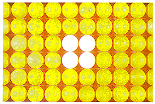
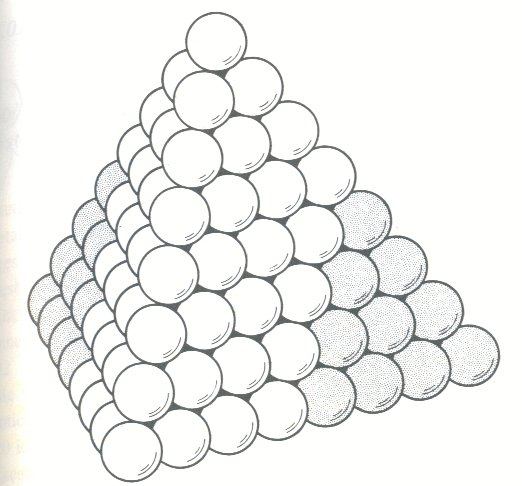

Based on my search for the volume inside a school bus of 2511 cubic ft.(~71.10 cubic meters)
'Layered'
'Stacked'
'Layered'
For the layered layout we simply calculate it as if the ball were a cube.
71.10 cubic meters / (.04 meters)^3 = ~1110937.5
So we can fit ~1,110,937 balls.
'Stacked'
For the stacked layout we can guesstimate by trying to see how many ping pong balls fit in a cubic meter. Or we can take into account what is called sphere packing density.
With an average sphere packing density of pi/sqrt(18) = ~ 0,74048 we get:
( 71.10 cubic meters / ((4/3)*pi*((.02 meters )^3)) )* pi/sqrt(18)= ~1571102.88
So we can fit ~1,571,102